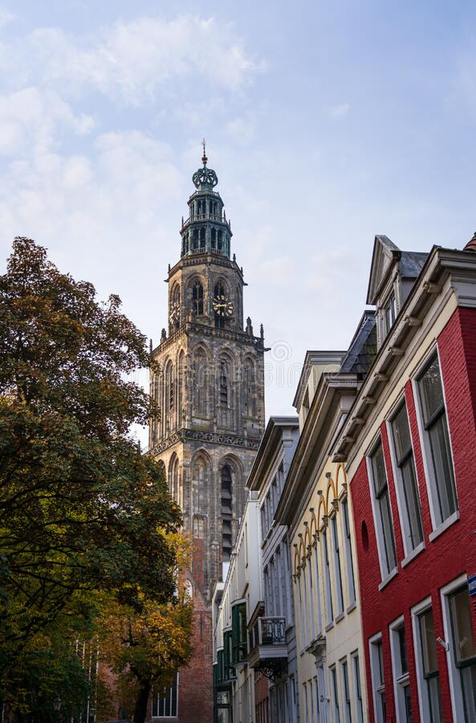
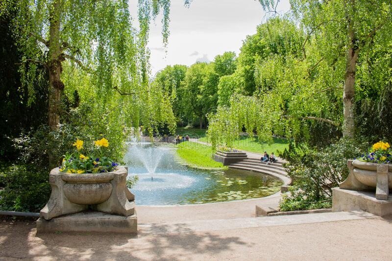

 De huidige Martinitoren stamt uit 1627 en is een wederopbouw van de toren nadat deze in 1577 vlam had gevat. Een wezenlijke functie die de Martinitoren in de geschiedenis heeft vervuld is de functie van uitkijktoren. Tot aan 1921 was in de toren een torenwachter aanwezig die onder meer als taak had toe te zien op eventueel uitbreken van brand in de stad. Daarmee was de Martinitoren het symbolisch wakend oog in de stad tot ver buiten de grenzen daarvan. De geschiedenis van het gebouw bevat veel restauraties naar aanleiding van natuur- en oorlogsgeweld. Sommige daarvan zijn nog altijd zichtbaar aan het gebouw. Dat maakt dat het gebouw onderdeel is van de geschiedenis van stad en ommeland. Ook was in de geschiedenis de Martinitoren zelf onderdeel van discussie over de vele restauraties aan de gebouw zelf. In 1888 werd in de toenmalige gemeenteraad gediscusieerd over de vraag of de toren - naar aanleiding van een voorgenomen restauratie - wel hersteld diende te worden of anders gesloopt diende te worden. Na een restauratie die begin deze eeuw werd afgerond aan het Rijksmomument, verkreeg de VVV Groningen (nu onderdeel van Marketing Groningen) het toeristisch beheer van de toren. Marketing Groningen heeft zich voorgenomen om het eeuwen oude verhaal van dit beeldbepalend historisch erfgoed te willen vertellen.
 Bij mooi weer liggen de oevers van de vijvers van het Noorderplantsoen vol met mensen. Zouden ze weten dat hier vroeger pittig oorlog werd gevoerd? Dat hier heuvels in het landschap ontstonden door voortstuwend landijs? Ach, waarom zou je je druk maken over geschiedenis, als je ook lekker in het groen kunt chillen?